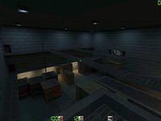
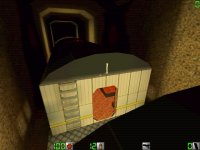
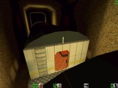

| BunnyX: Map Maker on the Rise |
| by Hammer |
 |
|
Hammer: How'd you find out about Action Quake? BunnyX: Ack, it was ages ago. No wait, it was only last September, my how time flies. Anyway I'd just gotten a copy of Quake 2 from my brother and I was really unimpressed with it's multiplayer aspect. Around the same time the name AQ kept popping up alot on the Ultima Online message boards I used to frequent (however I no longer play UO) so I decided to check it out and it turned out to be one of the better ways I've ever waste my time with. ;) Hammer: (For our less observant readers) which action maps have you made? BunnyX: The only map I've made that's been released so far is Terror on the Tracks (bxtrain2). There is no bxtrain1 available publically, since that was a rather limited release for testing, the results of which were put into the second version. Warehouse 7 (bxw7) is in testing at the Map Depot as we speak. It's deliberately modelled on hostage 2, which I think is a fantastic AQ map, but severely underrated and sees very little rotation on servers these days, which is a real shame. {Ed. Note - map released on 2/23/99} 
  Hammer: How long have you been making maps? BunnyX: On and off for about two years now. My work for AQ would be the first ever maps that have been released publically. Previous to that I made about a half dozen or so Quake I maps for my lan group, none of which have been released to my knowledge. Hammer: What do you use to make your maps? BunnyX: Tracks I whipped up using Worldcraft, since it's the same editor that I used in my Quake I days. I've learnt to appreciate what BSP can do though, it's a really fantastic, if user unfriendly, piece of software. Hammer: What's the average time necessary for creating a map? BunnyX: Since I like small tight maps I'll usually spend less than a week from the rough sketches to the finished product. The train was really fast since the segments were virtually identical and all that needed to be done was to fill the carriages with individual content. I lack a lot of patience, so if a project is taking too long I'll shove it aside and pick it up much later when I'm not so sick of it. {=) Hammer: What's your favorite map overall? for action? BunnyX: Oooh, tough call. It's a tie between Lock 'n Load and Hostage2. They play so well, and the AQ'er that knows what he's doing can survive indefinitely on these levels. Well, that was in the days when deathmatch was the way to play, and everyone did it with style. Hammer:sighHammer: Hammer: Do you have anything groovy in the pipeline (new maps coming?) BunnyX: Hmm, I have a half finished sewer system sitting on my HD, and sketches for a latin american village, a jungle island hideout/laboratory, a plane and a three ring circus. No telling when, or even if they'll all get finished. ;) Hammer: Do you still play action quake? What mods do you play? BunnyX: Only on occasion now, since I'm spending less time on the computer these days thanks to art school starting up and things. Hammer: What do you do when you're not making maps or playing quake? BunnyX: Drawing or painting usually, while ponder getting more exercise. Hammer: Thanks a lot for your time!!!!!  

|